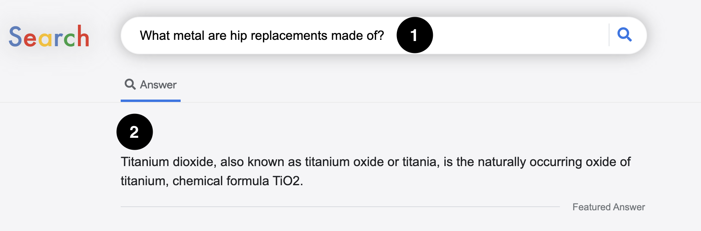

Help us judge whether certain passages are relevant to a given query!
For this task, imagine that you have just issued a query to your favourite web search engine. The search engine returns one answer passage. You have to decide whether the passage contains the answer you are looking for given your query. We ask you to judge the relevance of each passage with respect to its query. You can select between relevant, somewhat relevant, not relevant and I do not know.
Consider this example query: ''how many referees are there in a soccer match?''.
The passage ''In professional soccer, there are usually one referee and two assistant referees. In some games there may be a fourth or even fifth referee calling the game.'' would be the relevant answer. It provides a direct answer to the query posed.
The passage ''The linesman's job is to indicate to the Referee that a ball has gone out of play, either over the sideline or through the corner of the side they're monitoring, or to indicate that a player is offside during the course of play.'' would be an example of a somewhat relevant answer, as it is on topic but does not directly answer the query posed.
Finally, the passage ''All cricket matches have two on-field umpires. Matches which have television cameras at the ground have a third umpire. The two on-field umpires are located at different locations on the field.'' would be an example of a non-relevant answer. It is neither on topic (it does not discuss refereeing in soccer), nor does it answer the question.
If you are unsure about the relevance of the passage to its query, you can mark the I do not know option.
In this task, we will provide you with pages that look like this.
At the top you see a query (marked 1) and below it the passage retrieved for that query by a search system (marked 2).

You will see 42 such pages in total. For this study, you won't be able to change the query.
Once you are satisfied with your assessment click the Next query button to go to the next page.
Please Note!
The form to judge relevance will be shown after 5 seconds for each page.
All provided passages will be factually correct. You do not need to assess their correctness. You only need to assess if the passages are relevant to the query provided.
We request you to only use the passage we provide to assess the relevance. Please do not issue queries in a separate search engine.
Please avoid the use of your browser's back button as you go through this task.
Please finish the task in one go. Don't pause it and go do something else.
When ready, click on the Start button to start the task!